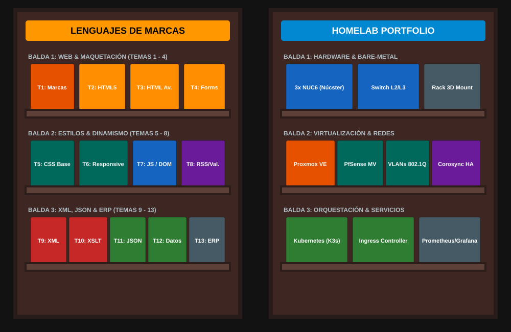

Proyectos
Esta página es un pequeño índice, o catálogo, de los proyectos aquí recogidos. La organización será como en una librería, con estantes temáticos. La idea es facilitar la navegación y la búsqueda de información, para que el lector pueda encontrar lo que busca sin tener que leer todo el contenido.
Visualización de la Biblioteca

SVG · 1000×650 px · 7 KB · material propio de Christian Comes · licencia: todos los derechos reservados.